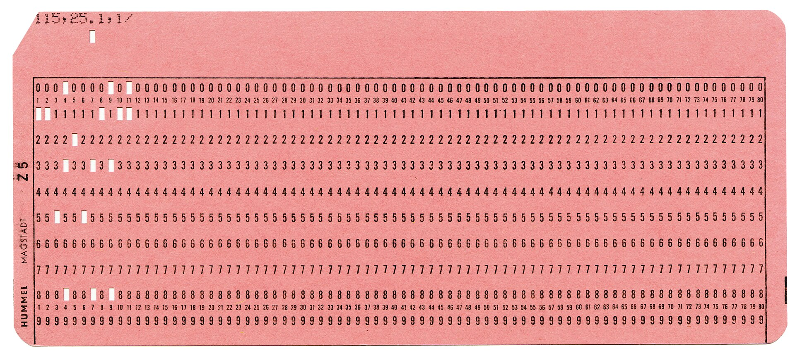
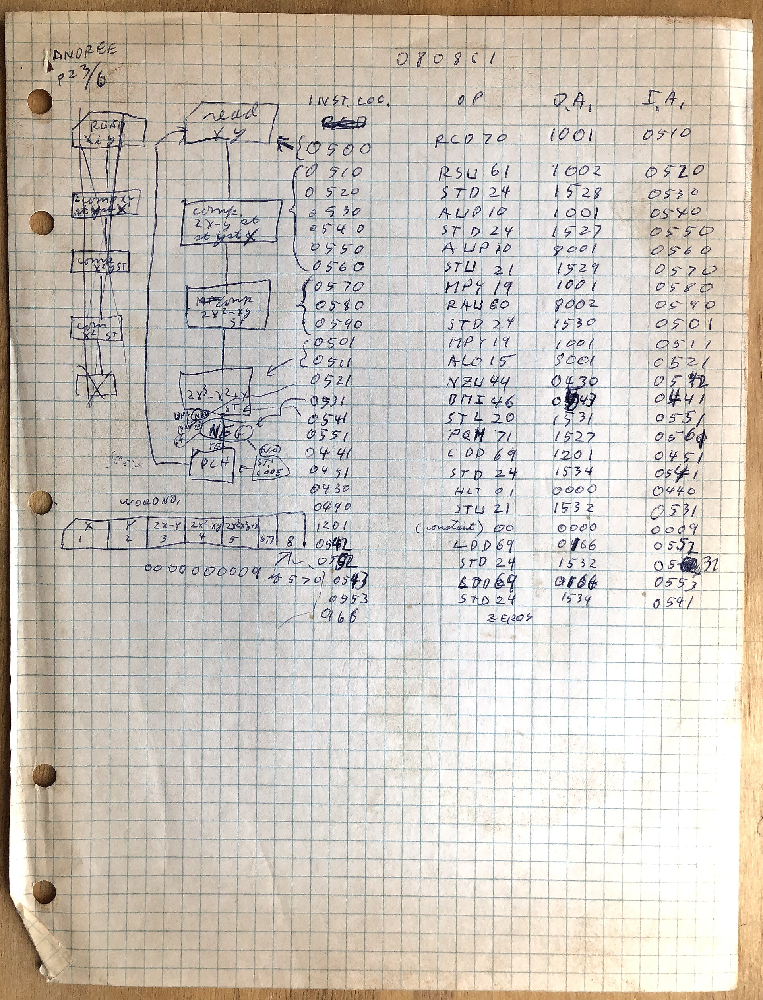
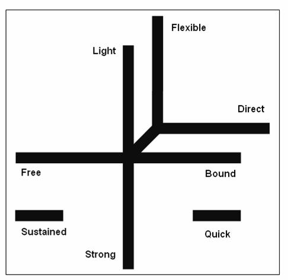
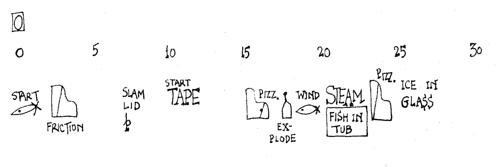
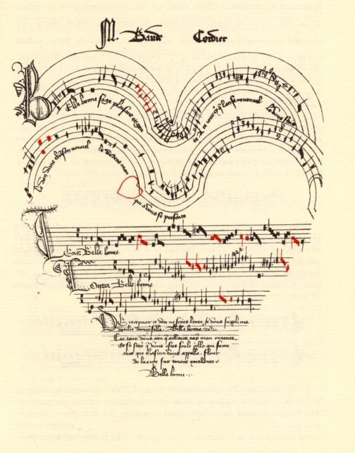
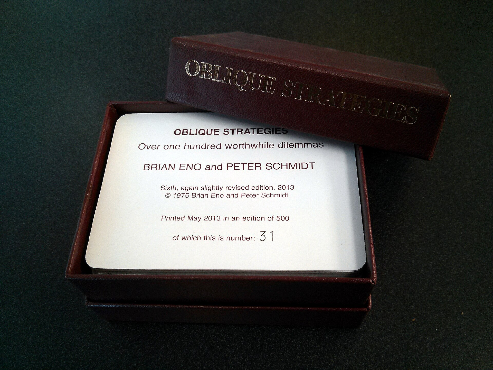
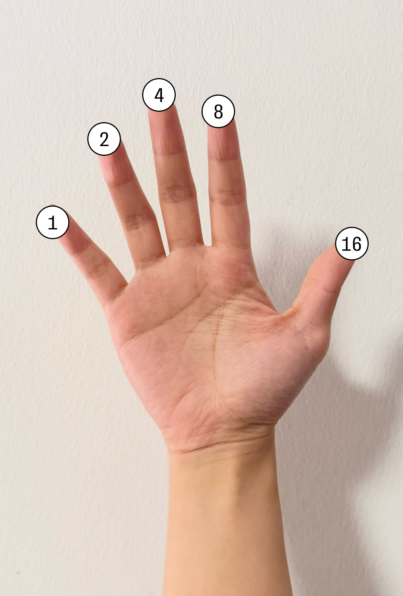

Week 10 · Semester 1 · 18 – 23 Oct
Symbols and Notation
Trigger
How was programming done before?
This week I focused on plotting the body: understanding how to translate body movements into symbols. Most of it was understanding concepts and reading literature. I also started looking into how programming was done in the past, at its most fundamental.
Funnily enough, I ended up looking at old-school punch cards and their history. Each punched hole is a tiny switch, on or off, and I found that aesthetic intriguing. It is the same idea as my 0 and 1 test, written in paper.

Punched card, 80-column IBM format. Harke, CC BY-SA 3.0, via Wikimedia Commons

A student program in machine language for the IBM 650, on punched cards, 1961. Arnold Reinhold, CC BY-SA 4.0, via Wikimedia Commons
References
Mapping movement into symbols
This week I had individual consultations for both the dissertation and the graduation project. Andreas gave me references on a question that became central to the project: how do you map movement into symbols? Each one is a different answer.
 Kinetography Laban score, extract from Sei solo (2009). Raphaël Cottin, CC BY-SA 4.0, via Wikimedia Commons
Kinetography Laban score, extract from Sei solo (2009). Raphaël Cottin, CC BY-SA 4.0, via Wikimedia Commons
Laban Effort graph. Jeffrey Scott Longstaff, CC BY-SA 3.0, via Wikimedia Commons
Labanotation
Rudolf von Laban developed his notation in the 1920s (his first book was Schrifttanz, “Written Dance”, 1928). It records any human movement with abstract symbols placed on a vertical staff. The staff is the body: its centre line is the body's centre line, the right side is the right side of the body, and a symbol's column tells you which body part moves. It is read from the bottom up, so the vertical axis is time. Four fundamentals carry the information: a symbol's shape gives the direction (nine directions in space), its shading the level (high, middle, low), its column the body part, and its length the duration. A related system, Motif notation, records only the core of a movement rather than every detail, so the writer chooses how precise to be.
Labanotation showed me how a body can be plotted and visualised as symbols, and how to build that system.
Having symbols links back to how a machine runs. As humans, we first have to visualise something before we can convert it into a programming language. How can I explain it, or show it to someone, if I can't visualise it myself? So to me it makes more sense to have a gesture plotted out first, and then translate that into something the machine can understand. The path is movement, to symbols, to language.
Viewpoints
Viewpoints began with Mary Overlie's Six Viewpoints in the 1970s (Space, Shape, Time, Emotion, Movement, Story) and was later adapted by Anne Bogart and Tina Landau. It breaks performance down into separate materials that can each be worked on, in a non-hierarchical way. Bogart and Landau's version splits gesture in two: behavioural gesture, realistic gestures we see every day, and expressive gesture, abstract or symbolic gestures that express an inner state. Time is split into tempo, duration, kinesthetic response and repetition.
Viewpoints helped me understand the different kinds of gestures there are, and that was a starting point for me.
I don't want people to learn new gestures for my language. Even though I am developing something new, it shouldn't feel uncomfortable. A bad example: if I gesture a circle and it gives me back a triangle, that doesn't make sense. There is already a cognitive understanding of basic gestures, and of how we find relevance in them, before we even try to piece them together into a language.

John Cage, Water Walk score. Chrisfred3, CC BY-SA 4.0, via Wikimedia Commons
Baude Cordier, Belle, Bonne, Sage (c. 1400), an early graphic score. Via Wikimedia Commons
Graphic notation
Graphic notation writes music with visual symbols outside traditional notation, and became popular in the 1950s with John Cage, Morton Feldman and Earle Brown. Its symbols can be extremely precise or intentionally imprecise, and many scores leave the interpretation to the performer, as in Brown's December 1952, where form and pitch are left open. The score becomes something a performer reads and responds to, not just a record.
That question, precise or open, stayed with me. Later I answered it for my own language: if you sign A then B, and then B then A, the visual should be different, and the same signs in the same order should give the same visual.

Oblique Strategies
Brian Eno and Peter Schmidt's deck of cards (1975), each with a constraint that pushes lateral thinking, such as “Honour thy error as a hidden intention”, “Ask your body” and “Repetition is a form of change”. Andreas thought it might be a tangent, but it shows how a small set of rules, drawn at a moment of being stuck, can shape a performance.
Labanotation stayed with me most. By November it was framing my dissertation, because it shows how to create a language for the body.
Experiment
Going back to basics: 0 and 1
Idea. Hands-and-code showed me I was building an interface, not a language, so I went back to how a machine reads anything at all. A machine is a CPU with a lot of switches turning on and off.
Why. To understand my code as binary switches, starting with the simplest switch a hand can make.
How. The sketch measures the distance from the wrist to the middle fingertip. An open hand is 1 and the screen turns white; a closed hand is 0 and it turns black.
Reflection. It didn't surprise me; it just made sense. I understand what 0 and 1 are, and the computer understands 0 and 1 too. That shared understanding was a moment of clarity. It was also the first time the gestures had meaning, instead of being random gestures that prompt a visual. It raised the next questions: how could I use 0 and 1 to expand, and could a series of gestures group into one output?
Closed = 0 · open = 1
Experiment
Writing with binary
Idea. A children's binary spelling game that shows how to calculate with binary. It helped me understand what a machine reads.
Why. Before jumping into shapes or numbers, I wanted to understand the fundamentals. If we don't strip everything back to the fundamentals, how can we truly understand the theory? Letters were a way of using the machine's own language to communicate with it.
How. Five fingers as five bits: pinky 1, ring 2, middle 4, index 8, thumb 16. The raised fingers are added up, and 1–26 become A–Z, so K is 11: index, ring and pinky. Hold a pose to type; wave to clear.
Reflection. I liked using fingers as binary because it allows many variations. But the detection was not the best: a lowered pinky that was still visible still counted. And it was too complicated and too technical for people to understand. What I could keep was the idea of different signs that trace variables.

Finger values

1–26 = A–Z
Typing with misreads
Reflection
Reflecting
Framing. The question this week became how to map movement into symbols. Labanotation showed me a body can be plotted as a system of symbols, and Viewpoints showed me there are different kinds of gesture.
In the moment. 0 and 1 brought me one step closer to understanding what machine code is and how a machine interprets code. The alphabet was a struggle, because there is so much to remember before you even get to the program. First you need to know which finger stands for which digit, then you have to add them up, so it is a multi-step process before you reach the goal. But that also brought me closer to what a gesture means, and the syntax behind it.